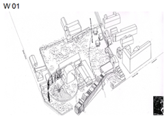

-
Wohnen an der Neufanggasse

Planung, Einreichung und Leitdetails
Auftraggeber: Salzburg Wohnbau -
Klima:aktiv Aribonenstraße

Mit Johannes Schallhammer Architektenwettbewerb: Ankauf
-
Alterszentrum Gremm

EU offener Architektenwettbewerb
-
Gymnasium Krems BG/BRG

EU offener Architektenwettbewerb
-
Moskau Chambre Theatre Art Centre
Mit Dirk Lüderwaldt und Marc Mer
-
Architekturpreis Land Salzburg 2012

Wir freuen uns sehr über einen Anerkennungspreis für die Lokalbahnstation Lamprechtshausen!
-
Wohnbebauung Humboldtstraße

Gutachterverfahren: 3. Preis